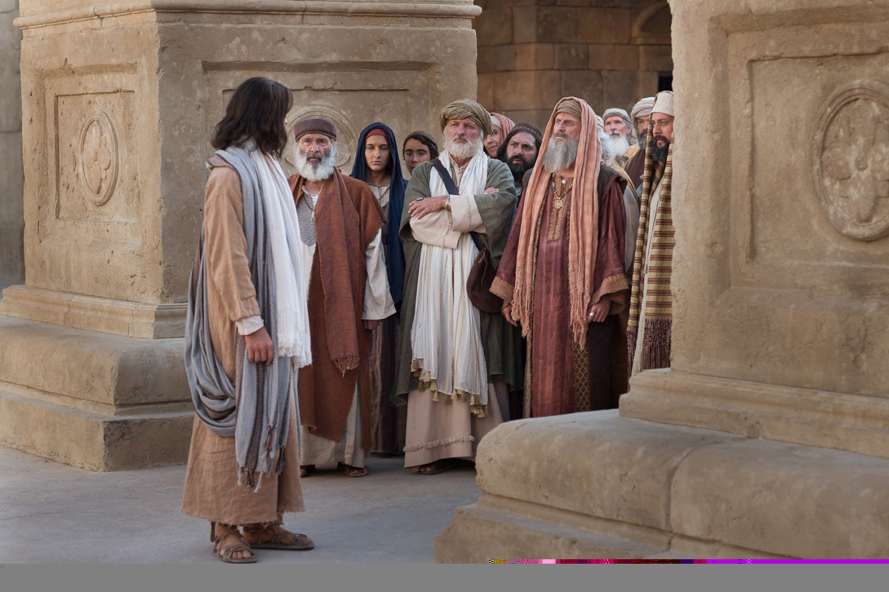

Leitura Orante
Leituras do Dia
Quinta - feira- 28ª Semana do Tempo Comum Santa Teresa de Jesus Virgem e Doutora da Igreja
(Branco - ofício da memória)
15 de outubro de 2020
Leitura Orante do Evangelho
Ouça o áudio da oração e reflexão do padre Francisco das Chagas


Oração do dia
Ó Deus, que pelo vosso Espírito fizestes surgir Santa Teresa para recordar à Igreja o caminho da perfeição, dai-nos encontrar sempre alimento em sua doutrina celeste e sentir em nós o desejo da verdadeira santidade. Por nosso Senhor Jesus Cristo, vosso Filho, na unidade do Espírito Santo.
Leitura: Jó 19,21-27
1Paulo, apóstolo de Cristo Jesus pela vontade de Deus, aos santos e fiéis em Cristo Jesus: 2a vós, graça e paz da parte de Deus, nosso Pai, e do Senhor Jesus Cristo. 3Bendito seja Deus, Pai de nosso Senhor Jesus Cristo. Ele nos abençoou com toda a bênção do seu Espírito em virtude de nossa união com Cristo, no céu. 4Em Cristo, ele nos escolheu, antes da fundação do mundo, para que sejamos santos e irrepreensíveis sob o seu olhar, no amor. 5Ele nos predestinou para sermos seus filhos adotivos por intermédio de Jesus Cristo, conforme a decisão da sua vontade, 6para o louvor da sua glória e da graça com que ele nos cumulou no seu bem-amado. 7Pelo seu sangue, nós somos libertados. Nele, as nossas faltas são perdoadas, segundo a riqueza da sua graça, 8que Deus derramou profusamente sobre nós, abrindo-nos a toda sabedoria e prudência. 9Ele nos fez conhecer o mistério da sua vontade, o desígnio benevolente que de antemão determinou em si mesmo, 10para levar à plenitude o tempo estabelecido e recapitular, em Cristo, o universo inteiro: tudo o que está nos céus e tudo o que está sobre a terra.– Palavra do Senhor.
Salmo Responsorial: 97 (98)
O Senhor fez conhecer seu poder salvador perante as nações.
Cantai ao Senhor Deus um canto novo, porque ele fez prodígios! Sua mão e o seu braço forte e santo alcançaram-lhe a vitória.
O Senhor fez conhecer seu poder salvador perante as nações.
O Senhor fez conhecer a salvação, e às nações, sua justiça; recordou o seu amor sempre fiel pela casa de Israel.
O Senhor fez conhecer seu poder salvador perante as nações.
Os confins do universo contemplaram a salvação do nosso Deus. Aclamai o Senhor Deus, ó terra inteira, alegrai-vos e exultai!
O Senhor fez conhecer seu poder salvador perante as nações.Cantai salmos ao Senhor ao som da harpa e da cítara suave! Aclamai, com os clarins e as trombetas, ao Senhor, o nosso rei!
O Senhor fez conhecer seu poder salvador perante as nações.Evangelho: Lucas 11, 47 - 54
Naquele tempo, disse o Senhor: 47“Ai de vós, porque construís os túmulos dos profetas; no entanto, foram vossos pais que os mataram. 48Com isso, vós sois testemunhas e aprovais as obras de vossos pais, pois eles mataram os profetas e vós construís os túmulos. 49É por isso que a sabedoria de Deus afirmou: Eu lhes enviarei profetas e apóstolos, e eles matarão e perseguirão alguns deles, 50a fim de que se peçam contas a esta geração do sangue de todos os profetas derramado desde a criação do mundo, 51desde o sangue de Abel até o sangue de Zacarias, que foi morto entre o altar e o santuário. Sim, eu vos digo, serão pedidas contas disso a esta geração. 52Ai de vós, mestres da Lei, porque tomastes a chave da ciência. Vós mesmos não entrastes e ainda impedistes os que queriam entrar”. 53Quando Jesus saiu daí, os mestres da Lei e os fariseus começaram a tratá-lo mal e a provocá-lo sobre muitos pontos. 54Armavam ciladas para pegá-lo de surpresa por qualquer palavra que saísse de sua boca.– Palavra da Salvação.
Leituras do mês
TAGS
missao Amazonia evengel covid-19 indigenas novica papa francisco
Destaques
Província Stella Matutina
Rua São Benedito, 2146 - Santo Amaro - São Paulo - SP |
Tel. (11)
5547-7222


Província Spiritus Divinae Sapientiae
Rua Arnaldo Janssen, 320 - Cara-Cara - Ponta Grossa - PR |
Tel. (42) 3326 4091